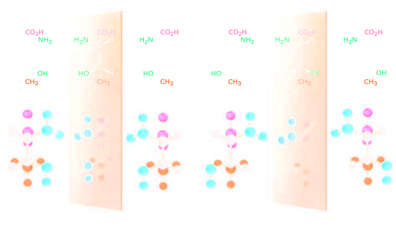

Diastereomers
Molecules like lactic acid, alanine, and glyceraldehyde are relatively simple because each has only one chirality center and only two stereoisomers. The situation becomes more complex, however, with molecules that have more than one chirality center. As a general rule, a molecule with n chirality centers can have up to 2n stereoisomers (although it may have fewer, as we’ll see below). Take the amino acid threonine (2-amino-3-hydroxybutanoic acid), for example. Since threonine has two chirality centers (C2 and C3), there are four possible stereoisomers, as shown in the Figure below. Check for yourself that the R,S configurations are correct.
The four stereoisomers of 2-amino-3-hydroxybutanoic acid can be grouped into two pairs of enantiomers. The 2R,3R stereoisomer is the mirror image of 2S,3S, and the 2R,3S stereoisomer is the mirror image of 2S,3R. But what is the relationship between any two molecules that are not mirror images? What, for instance, is the relationship between the 2R,3R isomer and the 2R,3S isomer? They are stereoisomers, yet they aren’t enantiomers. To describe such a relationship, we need a new term—diastereomer. Diastereomers are stereoisomers that are not mirror images.
| R,R | ←Diasteromers→ | R,S |
| ↕ Diasteromers | ⤡Enantiomers⤡ | ↕ Diasteromers |
| S,R | ←Diasteromers→ | S,S |
As we saw previously, enantiomers have identical properties unless they are placed in a chiral environment. Diastereomers, on the other hand, are not mirror images and have different properties in all evironments. They have different physical properties and different chemical properties.
Since we used the right-hand/left-hand analogy to describe the relationship between two enantiomers, we might extend the analogy by saying that the relationship between diastereomers is like that of hands from different people. Your hand and your friend’s hand look similar, but they aren’t identical and they aren’t mirror images. The same is true of diastereomers: they’re similar, but they aren’t identical and they aren’t mirror images. Note carefully the difference between enantiomers and diastereomers: enantiomers have opposite configurations at all chirality centers, whereas diastereomers have opposite configurations at some (one or more) chirality centers but the same configuration at others. A full description of the four stereoisomers of threonine is given in Table 5.2. Of the four, only the 2S,3R isomer, [α]D =-28.3, occurs naturally in plants and animals and is an essential human nutrient. This result is typical: most biological molecules are chiral, and usually only one stereoisomer is found in nature. In the special case where two diastereomers differ at only one chirality center but are the same at all others, we say that the compounds are epimers.
Cholestanol and coprostanol, for instance, are both found in human feces, and both have nine chirality centers. Eight of the nine are identical, but the one at C5 is different. Thus, cholestanol and coprostanol are epimeric at C5.
| Stereoisomer | Enantiomer | Diastereomer |
|---|---|---|
| 2R,3R | 2S,3S | 2R,3S and 2S,3R |
| 2S,3S | 2R,3R | 2R,3S and 2S,3R |
| 2R,3S | 2S,3R | 2R,3R and 2S,3S |
| 2S,3R | 2R,3S | 2R,3R and 2S,3S |